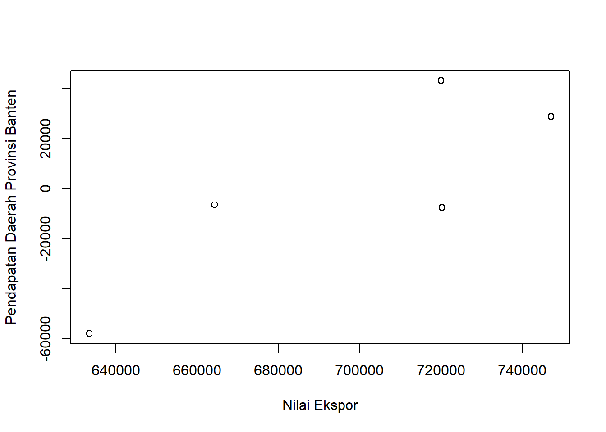
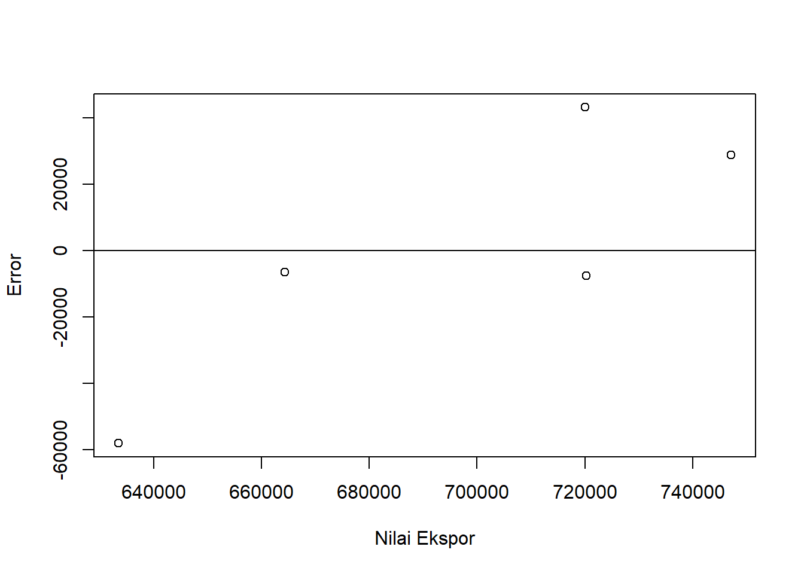
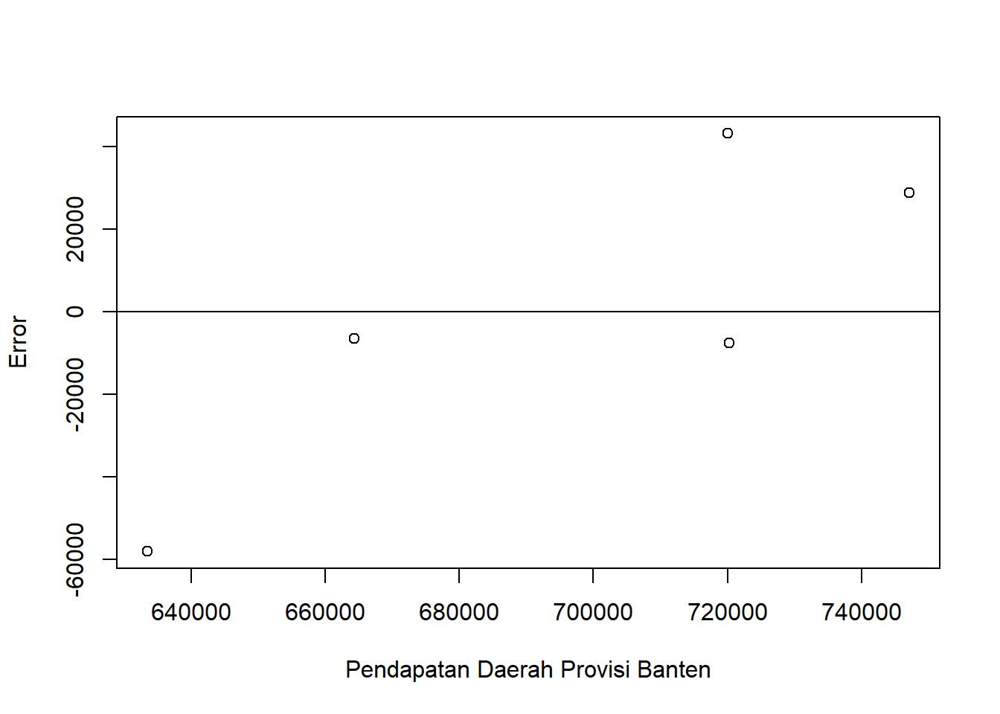

library(tidyverse)
library(readxl)Pengaruh Nilai Ekspor Terhadap Pendapatan Daerah Provinsi Banten Tahun 2018 - 2022
Metode Penelitian Politeknik APP Jakarta

1 Pendahuluan
1.1 Latar belakang
Ekspor merupakan salah satu kegiatan dalam pergadangan internasional yang dapat mempengaruhi tingkat pendapatan dalam negeri. Kegiatan ekspor dapat dikatakan proses transportasi barang atau komoditas dari suatu negara ke negara lain secara legal, umumnya dalam proses perdagangan. Apabila ekspor bertambah, maka akan merangsang pertumbuhan ekonomi di suatu negara. Nilai ekspor yang tinggi dapat ikut andil pada peningkatan pendapatan daerah, yang menjadi salah sumber pemasukan yang dimanfaatkan oleh pemerintah daerah untuk membiayai dan memfasilitasi kegiatan pembangunan dan penyediaan layanan public di daerah tersebut. Sumber-sumber Penghasilan Daerah adalah hasil pajak daerah, hasil retribusi daerah, hasil perusahaan milik daerah dan hasil pengelolaan kekayaan daerah yang dipisahkan.
Nilai ekspor di Banten selama tahun 2018 – 2022 menunjukan kinerja yang cukup baik. Penurunan nilai ekspor Provinsi Banten yang terjadi pada tahun 2020 dipengaruhi dengan pandemi covid-19 yang menghambat kegiatan ekonomi dunia. Pada tahun selanjutnya, di 2021 - 2022 perbaikan kondisi perekonomian global pasca pandemi kembali membawa nilai ekspor Provinsi Banten kembali naik.
Sebagian besar kegiatan ekspor Provinsi Banten dikirim melalui Tanjung Priok yang berstatus sebagai Pelabuhan Intenasional berkapasitas besar. Hal lain yang mendukung kegiatan ekspor daerah Provinsi Banten adalah kemudahan akses serta lokasi Pelabuhan Tanjung Priok yang relatif dekat dari Provinsi Banten bila ditempuh dari Kabupaten Tangerang, Kota Tangerang dan Kota Tangerang Selatan dimana merupakan tiga kabupaten/kota yang mendominasi kegiatan perekonomian di Provinsi Banten.
1.2 Ruang lingkup
Ruang lingkup pada pembahasan masalah sesuai dengan variable yang digunakan pada analisis, yaitu keseluhuan Nilai Ekspor Provinsi Banten dan Pendapatan Daerah Provinsi Banten dalam rentang tahun 2018 – 2022. Data pada Pendapatan Daerah Provinsi Banten telah diubah dalam kurs USD guna memudahkan keserasian pada data Nilai Ekspor yang menjadi objek penelitian.
1.3 Rumusan masalah
Berdasarkan uraian latar belakang diatas maka yang menjadi masalah pokok pada penelitian ini adalah:
- Apakah nilai ekspor berpengaruh pada pendapatan daerah Provinsi Banten?
- Bagaimana pengaruh nilai ekspor pada pendapatan daerah di Provinsi Banten?
1.4 Tujuan dan manfaat penelitian
Tujuan penelitian ini adalah untuk mengetahui pengaruh Nilai Ekspor secara keseluruhan terhadap Pendapatan Daerah Provinsi Banten tahun 2018 - 2022.
Manfaat penelitian baik untuk pembaca dan penulis adalah untuk mengetahui bahwa adanya pengaruh Nilai Ekspor terhadap Pendapatan Daerah Provinsi Banten.
1.5 Package
Packages yang digunakan untuk mendukung penelitian ini antara lain sebagai berikut:
2 Studi pustaka
Eskpor
Menurut Undang-Undang Kepabean Nomor 17 Tahun 2006, ekspor adalah kegiatan mengeluarkan barang produksi dari dalam negeri ke luar negeri untuk menghasilkan devisa. Kegiatan ekspor biasanya dilakukan suatu negara yang memproduksi barang dalam jumlah besar sehingga kebutuhan akan barang tersebut sudah terpenuhi di dalam negerinya. Oleh karena itu, kelebihan barang tersebut dikirim ke negara lain untuk dijual. Setiap barang yang akan diekspor memiliki syarat dan ketentuannya tergantung dari jenis barang yang akan diekspor.
Pendapatan Daerah
Pendapatan daerah adalah semua penerimaan kas yang menjadi hak daerah dan diakui sebagai penambah nilai kekayaan bersih dalam satu tahun anggaran dan tak perlu dibayar lagi oleh pemerintah. Pendapatan Daerah adalah hak pemerintah daerah yang diakui sebagai penambah nilai kekayaan bersih (UU No 33 tahun 2004 tentang Perimbangan Keuangan antara Pemerintah Pusat dan Pemerintahan Daerah). Pendapatan daerah meliputi semua penerimaan uang melalui Rekening Kas Umum Daerah, yang menambah ekuitas dana lancar, yang merupakan hak daerah dalam satu tahun anggaran yang tidak perlu dibayar kembali oleh daerah (PP No. 58 tahun 2005 tentang Pengelolaan Keuangan).
3 Metode penelitian
3.1 Data
Berikut merupakan data yang digunakan sebagai objek penelitian. Data yang digunakan yaitu data Nilai Ekspor di Provinsi Banten secara keseluruhan dan data Pendapatan Daerah Provinsi Banten (USD).
| Tahun | Nilai Ekspor (X) | Pendapatan Daerah Provinsi Banten |
|---|---|---|
| 2018 | 11.920,74 | 633.393,15 |
| 2019 | 11.045,60 | 720.056,41 |
| 2020 | 10.685,70 | 664.276,99 |
| 2021 | 13.511,51 | 747.146,09 |
| 2022 | 14.084,15 | 720.299,49 |
Penelitian ini menggunakan data Pendapatan Daerah Provinsi Banten dari Laporan Statistik Keuangan Badan Pusat Statistik (BPS) dan Nilai Ekspor Impor Provinsi Banten tahun 2018 – 2022 yang sudah disamakan satuannya menjadi USD.
setwd("C:/Users/Hp/Documents/KULIAH/UAS METOPEN")
library('readxl')
dat<-read_excel('DATA BANTEN.xlsx')
reg1<-lm(Y~X,data=dat)
dat$u<-resid(reg1)
plot(dat$Y,dat$u,xlab="Nilai Ekspor",ylab="Pendapatan Daerah Provinsi Banten")
Plot Nilai Ekspor terhadap Pendapatan Daerah Provinsi Banten
library('readxl')
dat$u<-resid(reg1)
plot(dat$Y,dat$u,xlab="Nilai Ekspor",ylab="Error")
abline(h=0)
Plot Pengaruh Error terhadap Nilai Ekspor
library('readxl')
dat$u<-resid(reg1)
plot(dat$Y,dat$u,xlab="Pendapatan Daerah Provisi Banten",ylab="Error")
abline(h=0)
Plot Pengaruh Error terhadap Pendapatan Daerah Provinsi Banten
3.2 Metode analisis
Metode analisis yang digunakan dalam penelitian ini adalah teknik kuantitatif deskriptif. Metode yang dipilih adalah regresi univariat atau Ordinary Least Square (OLS) dengan 1 variabel independen. Penelitian ini bertujuan untuk mencari tau hubungan antara Nilai Ekspor terhadap Pendapatan Daerah Banten.
\[ y_{t}=\beta_0 + \beta_1 x_t+\mu_t \] di mana \(y_t\) adalah Y dan \(x_t\) adalah X. Y adalah Pendapatan Daerah Provinsi Banten dan X adalah Nilai Ekspor.
4 Pembahasan
4.1 Pembahasan masalah
| Variable | Coefficient | Std. Error | t-value | Prob(.) |
|---|---|---|---|---|
| Intercept | 491510.83 | 186872.87 | 2.630 | 0.0783 |
| X | 16.78 | 15.17 | 1.106 | 0.3493 |
| R squared | 0.2898 | |||
| Adjusted R-Squared | 0.05303 | |||
| F-Statistic | 1.224 | |||
| Prob (F-Statistic) | 0.3493 |
Hasil regresi yang diperoleh dimasukkan ke dalam persamaan rumus, sehingga rumusnya menjadi :
\(Y = 491510.83 + 16.78 X\)
4.2 Analisis masalah
Hasil regresinya adalah
library(readxl)
dat<-read_excel('DATA BANTEN.xlsx')
reg1<-lm(Y~X,data=dat)
summary(reg1)
Call:
lm(formula = Y ~ X, data = dat)
Residuals:
1 2 3 4 5
-58125 43222 -6519 28938 -7516
Coefficients:
Estimate Std. Error t value Pr(>|t|)
(Intercept) 491510.83 186872.87 2.630 0.0783 .
X 16.78 15.17 1.106 0.3493
---
Signif. codes: 0 '***' 0.001 '**' 0.01 '*' 0.05 '.' 0.1 ' ' 1
Residual standard error: 45400 on 3 degrees of freedom
Multiple R-squared: 0.2898, Adjusted R-squared: 0.05303
F-statistic: 1.224 on 1 and 3 DF, p-value: 0.3493Jika setiap kenaikan Nilai Ekspor diasumsikan sebesar 1, maka Pendapatan Daerah Provinsi Banten akan meningkat sebesar 16.78.
5 Kesimpulan
Berdasarkan hasil penelitian, dapat disimpulkan bahwa Nilai Ekspor berpengaruh terhadap Pendapatan Daerah Provinsi Banten di tahun 2018 - 2022. Dari hasil regresi, menunjukkan bahwa setiap kenaikan Nilai Ekspor pada Pendapatan Daerah Provinsi Banten sebesar 1 memberikan dampak positif berupa kenaikan sebesar 16.78.
Dengan demikian, dapat dikatakan bahwa kegiatan ekspor secara keseluruhan yang dilakukan memungkinkan memberi pengaruh baik terhadap Pendapatan Daerah di Provinsi Banten di tahun terkait.
6 Saran
Untuk meningkatkan akurasi dari hasil penelitian ini, disarakankan untuk menambah variabel yang mendukung variabel terkait dalam penelitian untuk lebih secara efektif menjelaskan hubungan antara variabel terkait.
7 Referensi
Badan Pusat Statistik Provinsi Banten.
(2023, October 5). Statistik Keuangan Daerah Provinsi Banten 2021. Retrived January 14, 2024, from
Badan Pusat Statistik Provinsi Banten.
(2023, December 1). Statistik Keuangan Daerah Provinsi Banten 2021. Retrived January 14, 2024, from
Badan Pusat Statistik Provinsi Banten.
(2022, December 2). Statistik Keuangan Daerah Provinsi Banten 2022. Retrived January 14, 2024, from
DIREKTORAT JENDERAL PERIMBANGAN KEUANGAN KEMENTERIAN KEUANGAN
https://djpk.kemenkeu.go.id/?ufaq=apa-yang-dimaksud-dengan-pendapatan-daerah